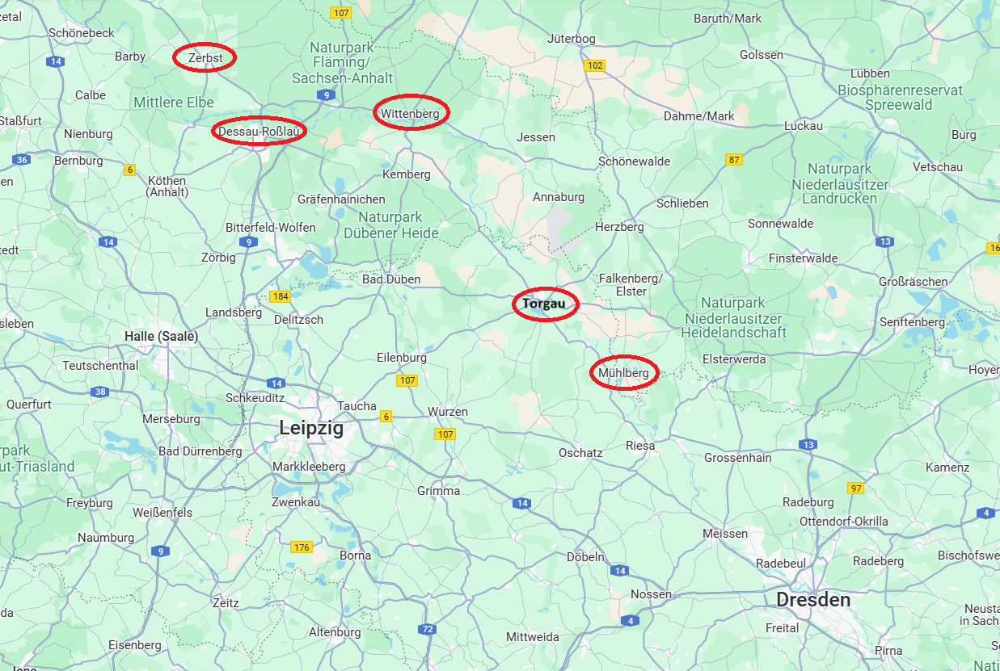
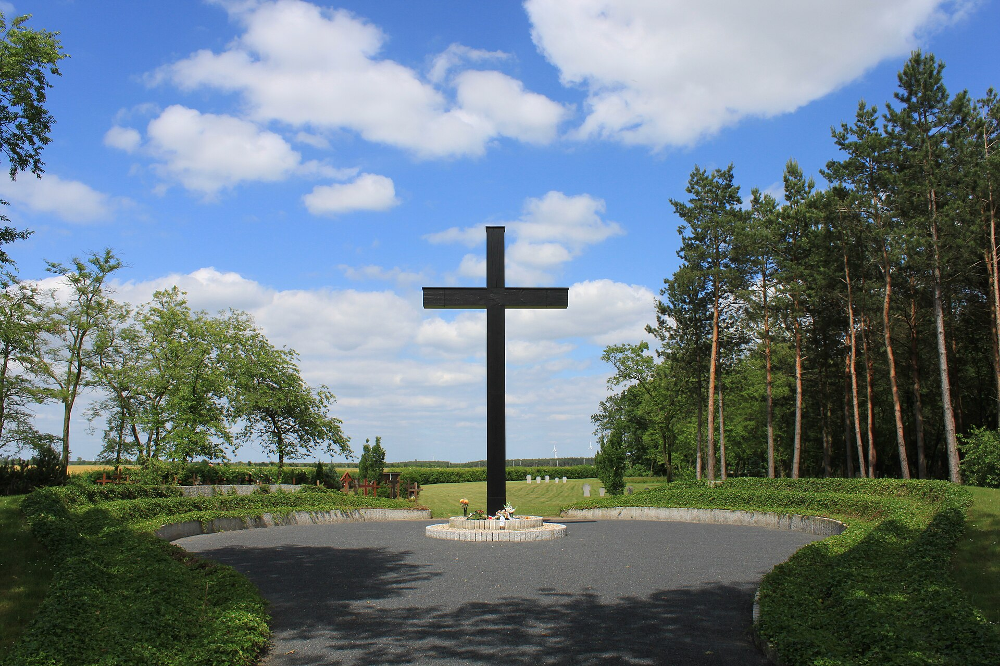
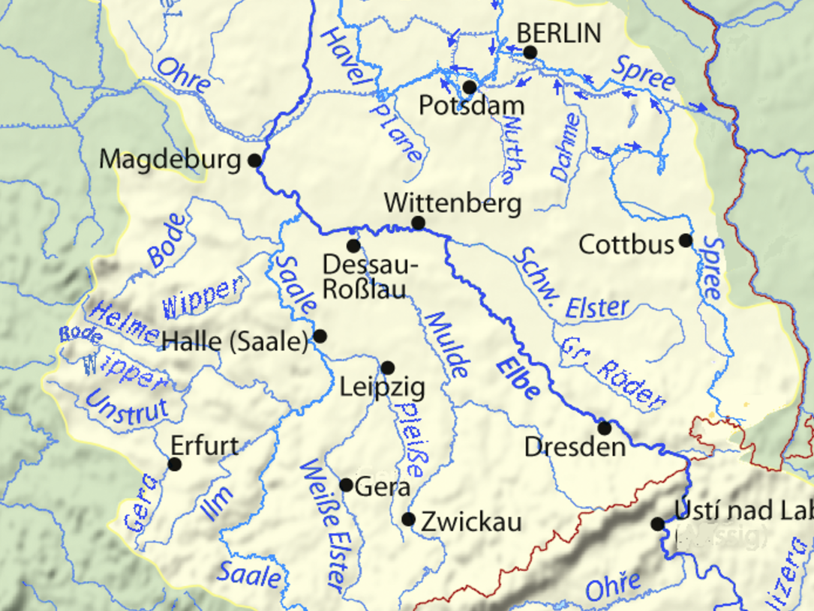
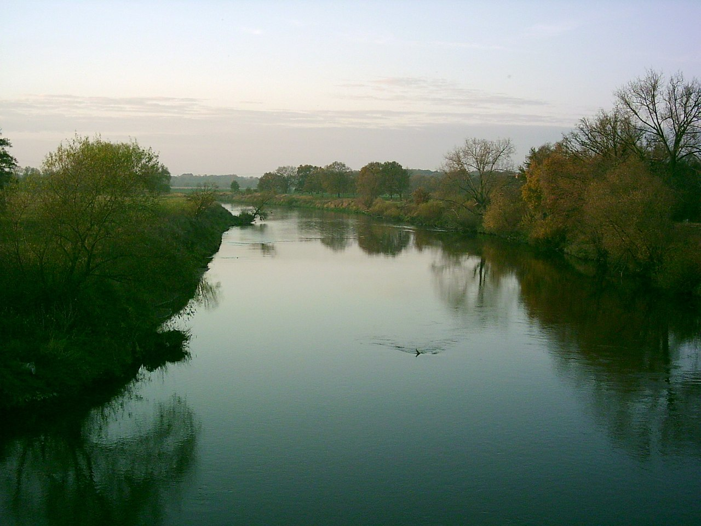
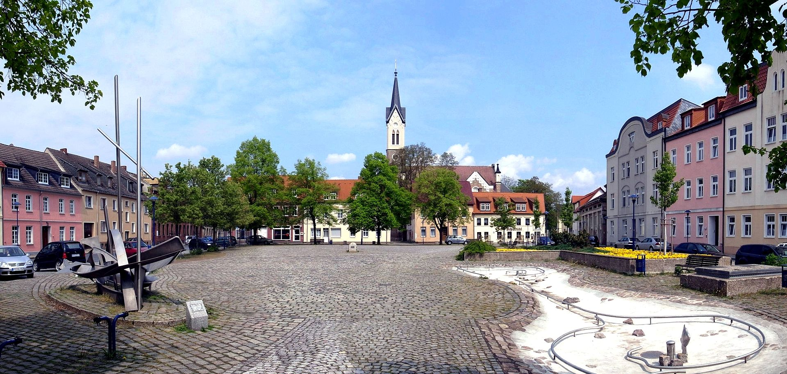
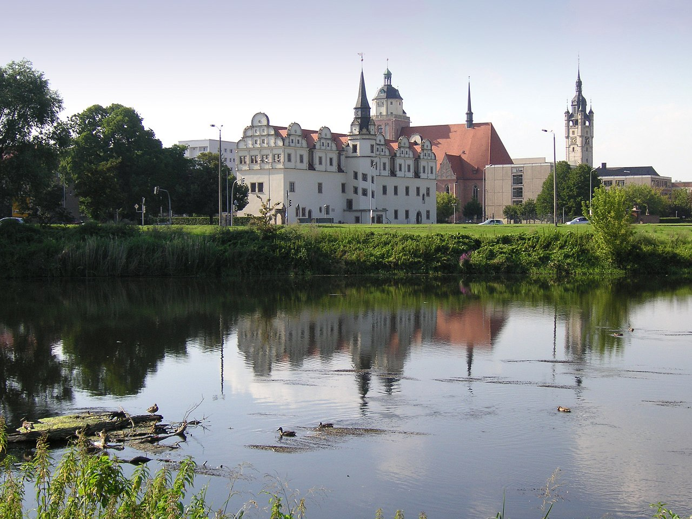
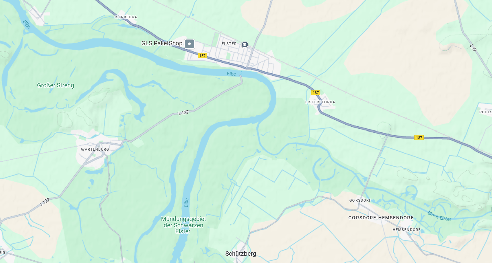

라이프치히로 가는 길 (7) - 강들과 다리들
게시: 2024-12-09T06:30:30+09:00
도강 작전 자체도 어렵지만 도강했다가 패배했을 때 재빨리 다시 강을 건너 후퇴하는 것은 더욱 어려운 일이었습니다. 그 어려운 작전을 위해 그나이제나우가 나름 머리를 써서 만든 작전의 기본 얼개는 입구와 출구를 분리한다는 것이었습니다. 그는 강을 건너 진격하기 전에 먼저 퇴로부터 확보했는데, 토르가우 하류 48km 지점이자 비텐베르크 상류 16km 지점의 우안에 위치한 엘스터(Elster) 마을 근처에 참호로 보호된 강화 진지를 구축하고 거기에 다리를 놓기로 했습니다. 그러면서 정작 강을 건너는 것은 토르가우 상류 24km 지점에 있는 뮐베르크(Mühlberg)에서 하기로 했습니다. 이렇게 뮐베르크에서 강을 건너면 나폴레옹은 당연히 퇴각도 그 쪽으로 하리라고 생각하고 포위망을 펼칠 생각이겠지만, 만약 전세가 불리해지면 슐레지엔 방면군은 나폴레옹의 예상을 깨고 그 북쪽이자 엘베 강 하류쪽으로 70km, 그러니까 대략 2일 강행군 거리인 엘스터로 퇴각하여 거기서 엘베강을 건넌 뒤 강화 진지에서 농성하며 다른 방면군들이 나폴레옹의 뒤를 쳐주기를 기다릴 셈이었던 것입니다.

(뮐베르크(Mühlberg)를 포함한 주요 지점의 지도입니다. 당시 베르나도트의 사령부는 저 북쪽 체릅스트(Zerbst)에 있었고, 블뤼허는 저 남동쪽 엘스터베르다를 거쳐 비텐베르크 근처의 엘스터로 향하고 있었습니다.)

(뮐베르크(Mühlberg)는 지금도 인구 3천명 정도의 작은 도시입니다만, 이 작은 도시에도 WW2의 아픈 상처가 있습니다. 원래 여기엔 독일군의 포로 수용소가 있었는데 약 3천명 정도의 소련군 포로들이 여기서 비참한 죽음을 맞이하여 묻혔습니다. 그러나 업보라고 하기엔 너무 잔혹하게도, 패전 이후 바로 그 장소는 소련 비밀경찰 NKVD가 관리하는 포로 수용소가 되었고, 여기서 독일군 6~7천명이 비참하게 죽어 묻혔습니다. 저 묘비는 양측 모두의 희생자를 기리는 것입니다.) 이는 매우 대담한 작전임과 동시에 지리적 스케일이 꽤 큰 계획이었습니다. 무엇보다도, 이는 베르나도트의 북부 방면군과의 협력이 절실히 필요한 작전이었습니다. 엘스터 마을은 북부 방면군이 담당하는 지역이었고, 특히 바로 그 근처인 그랑다르메가 점거한 요새 비텐베르크는 뷜로의 프로이센 제3군단이 포위 작전을 펼치고 있었습니다. 그런데 여전히 베르나도트와 블뤼허 사이의 협업은 그다지 원활하지는 않았습니다. 베르나도트 휘하의 두 프로이센 군단장인 타우엔치언과 뷜로는 베르나도트를 불신하고 있었고, 특히 타우엔치언은 유사시 베르나도트의 명령을 무시하고 블뤼허의 명령을 받겠다고 블뤼허에게 밀서를 보낸 상태였습니다. 비텐베르크를 포위 중인 뷜로는 베르나도트와 더욱 사이가 좋지 않았습니다. 그는 베르나도트의 명령에 따라 어쩔 수 없이 비텐베르크를 포위하고는 있었으나, 함락 가능성이 없는 철옹성 비텐베르크를 함락시키라는 것은 사실상 언제가 될지 모르지만 비텐베르크 요새의 식량이 다 떨어질 때까지 그냥 그 주변에 가만히 있으라는 소리나 마찬가지였기 때문이었습니다. 뷜로는 당장 네의 패잔병들을 추격해도 부족한 판국에 자신을 이 무의미한 작전에 투입하여 시간낭비만 하고 있는 것에 대해 베르나도트에게 매우 강한 언사로 항의했기 때문에, 베르나도트는 뷜로를 체포하겠다는 위협을 할 정도로 사이가 벌어져 있었습니다. 뷜로에게도 블뤼허의 밀사가 와서 유사시 블뤼허와 협력하겠는지 의사를 물었는데, 뷜로는 타우엔치언과는 생각이 또 달라서, 베르나도트로부터 프로이센군을 모조리 뜯어가는 것은 파장이 너무 커질 것이니, 타우엔치언의 프로이센 제4군단을 베르나도트에게 남겨두고 자신의 제3군단이 블뤼허와 함께 하는 것이 좋겠다는 뜻을 전했습니다. 한편, 이들이 상대하게 될 네의 베를린 방면군 잔존부대는 상황이 매우 좋지 않았습니다. 일단 토르가우에서 도강하여 안전한 엘베강 좌안으로 옮겨온 네는 엘베강과 그 서쪽의 묄더강 사이에서 부대를 재편성하기 위해 애를 쓰고 있었습니다만, 그게 쉽지가 않았습니다. 네는 드레스덴으로 소환되어 신참근위대를 지휘하게 된 우디노의 기존 제12군단을 아예 해산하여 그 잔존 병력을 베르트랑의 제4군단과 레이니에의 제7군단에게 분산 배치했습니다만, 이 두 군단의 병력은 오히려 날마다 병력이 감소하고 있었습니다. 승리하고 있을 때도 약간씩 드러나던 프랑스군과 독일-이탈리아 등 외국군 간의 갈등이 고달픈 후퇴길에서 걷잡을 수 없이 터져나오고 있었던 것입니다. 특히 작센군과 바이에른군이 집단으로 탈영하여 베르나도트 진영으로 귀순하는 것이 심각한 수준이었습니다. 이를 막을 뾰족한 수를 찾지 못한 네는 견디다 못해 나폴레옹에게 편지를 보내, 나폴레옹이 직접 베를린 방면군을 방문하여 소위 '나폴레옹 버프'를 불어 넣어주길 요청했으나, 당시 나폴레옹은 막도날의 보버 방면군을 방문하여 버프를 넣어주고 있었으므로 그럴 수가 없었습니다.

(묄더(Mulde)강 역시 슈발츠 엘스터강처럼 엘베강으로 들어가는 지류입니다. 묄더강이 엘베강에 합류하는 양수리 근처에 로슬라우(Rosslau)와 데사우(Dessau)가 있습니다. 묄더의 독일어 발음을 들어보면 제 귀에는 거의 '무에다' 정도로 들립니다.) 이렇게 조금씩 스스로 붕괴하고 있던 네의 베를린 방면군을 베르나도트가 들이쳤다면 그야말로 와장창 무너지지 않았을까요? 그 쉬운 공격을 하지 않고 있었기 때문에 베르나도트에 대해 프로이센군의 불만이 하늘을 찌르고 있긴 했습니다. 그러나 갈등이 있을 경우 양측의 이야기를 다 들어봐야 한다고, 프로이센 장군들의 편견과는 달리 실은 베르나도트도 완전히 손을 놓고 빈둥거리고만 있었던 것은 결코 아니었습니다. 9월 16일, 그의 스웨덴군이 로슬라우(Roßlau)에서 엘베강을 건넌 뒤, 엘베강 좌안에 교두보를 지었던 것입니다. 이들은 이틀 뒤인 9월 18일 엘베강과 묄더강이 합쳐지는 지점인 데사우(Dessau)에 입성하여 거기서 묄더강에도 다리를 놓았습니다. 뿐만 아니라 이들은 거기서 다시 20km 떨어진 엘베강 하류 지역에 두 번째 다리까지 놓았습니다. 지난 편에서 9월 22일~23일 블뤼허를 맹렬히 공격하던 나폴레옹에게 베르나도트가 엘베강에 다리를 놓았다는 소식이 날아드는 바람에 나폴레옹이 블뤼허에 대한 공격을 사실상 중단하게 되었다고 했지요. 그러니까 프로이센측의 맹비난과는 반대로, 베르나도트가 트라헨베르크 의정서에 충실하게 작전을 펼쳐 프로이센군을 구해줬다고 해도 과언은 아니었던 것입니다.

(두어벤(Dueben) 근처에서의 묄더강의 모습입니다. 저 오리의 크기로 묄더강의 폭을 대충 짐작할 수 있습니다. 대충 안양천 수준입니다.)

(로슬라우는 지금도 인구가 1만2천 정도 되는 소도시입니다. 사진은 현재의 시장+광장입니다.)

(그렇게 가까운 거리이던 데사우와 로슬라우는 결국 2007년 합쳐져 Dessau-Rosslau가 되었습니다. 사진은 묄더 강변의 데사우 성입니다.) 엘베 강변의 비텐베르크를 포위하고 있던 뷜로도 엘베강에 다리를 놓을 수 있었던 것 아니냐고요? 당연했습니다. 실제로 뷜로는 비텐베르크에서 엘베강 상류로 약 24km 떨어진 엘스터 마을에 다리를 놓기 시작했고 9월 21일 완성했습니다. 그러니까 그나이제나우가 서류상으로만 놓아두었던 엘스터 마을의 다리를 뷜로가 미리 완성해둔 셈이었습니다.

(비텐베르크(Wittenberg) 상류쪽, 그러니까 이 지도에서 비텐베르크 오른쪽에 위치한 엘스터(Elster)는 경기도로 따지면 양수리, 즉 두물머리라고 할 수 있습니다. 바로 검은 엘스터(Schwartz Elster) 강이 엘베강과 합류하는 지점에 있는데, 특히나 남쪽에서 북쪽으로 흐르던 엘베강이 여기서 크게 서쪽으로 휘면서 엘스터 마을 건너편을 일종의 만곡부로 만들어주었습니다.) 여기서 또 의문이 들 수 있습니다. 베르나도트가 이렇게 여유롭게 다리를 짓고 있을 때, 대체 네는 뭘하고 있었길래 다리가 완공될 때까지 손을 놓고 있었냐 하는 것이지요. 네도 가만히 있지 않았습니다. 기병대가 크게 부족하여 정찰 활동이 부실할 수 밖에 없었던 네가 이 소식을 접한 것은 며칠이 지난 뒤인 21일이었습니다. 네는 당장 대응에 나섰습니다. 그는 아직 강을 건넌 연합군은 소수라고 보고, 베르트랑의 제4군단 휘하 모랑(Morand)의 제12사단을 급파하여 연합군을 엘베강 너머로 쫓아내고 다리를 파괴하도록 명령했습니다. 이렇게 아직 블뤼허의 슐레지엔 방면군이 도착하기도 전에, 네와 베르나도트는 덴너비츠 전투 이후 처음으로 리턴 맷치를 가지게 되었습니다. Source : The Life of Napoleon Bonaparte, by William Milligan Sloane Napoleon and the Struggle for Germany, by Leggiere, Michael V With Napoleon's Guns by Colonel Jean-Nicolas-Auguste Noël https://www.britannica.com/event/Napoleonic-Wars/Dispositions-for-the-autumn-campaign http://www.historyofwar.org/articles/campaign_leipzig.html https://en.wikipedia.org/wiki/Mulde https://en.wikipedia.org/wiki/Dessau-Ro%C3%9Flau